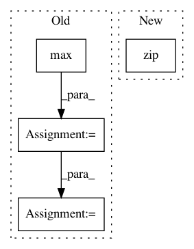

de00082780be884fc90e0113d323bfd63006ffba,main.py,Model,train,#Model#Any#Any#,428
Before Change
cli_report = OrderedDict()
for i_batch, data_pt in enumerate(dataset.epoch(
"train", hparams.BATCH_SIZE * hparams.MAX_N_SIGNAL, shuffle=True)):
max_len = max(map(len, data_pt[0]))
spectra = np.stack(
[np.pad(x, [(0, (-len(x))%max_len), (0,0)], mode="constant") for x in data_pt[0]])
spectra = np.reshape(
spectra,
[hparams.BATCH_SIZE, hparams.MAX_N_SIGNAL, max_len, hparams.FEATURE_SIZE])
to_feed = dict(
After Change
"train",
hparams.BATCH_SIZE * hparams.MAX_N_SIGNAL, shuffle=True)):
to_feed = dict(
zip(self.train_feed_keys, (
np.reshape(data_pt[0], [hparams.BATCH_SIZE, hparams.MAX_N_SIGNAL, -1, hparams.FEATURE_SIZE]),
hparams.DROPOUT_KEEP_PROB)))
step_summary, step_fetch = g_sess.run(
self.train_fetches, to_feed)[:2]
self.reset_state()
In pattern: SUPERPATTERN
Frequency: 3
Non-data size: 4
Instances
Project Name: khaotik/DaNet-Tensorflow
Commit Name: de00082780be884fc90e0113d323bfd63006ffba
Time: 2017-08-07
Author: junkkhaotik@gmail.com
File Name: main.py
Class Name: Model
Method Name: train
Project Name: arviz-devs/arviz
Commit Name: 60735e872bc1ff102bf85d6ade348d5859e2bfef
Time: 2015-10-14
Author: aloctavodia@gmail.com
File Name: mcmcplotlib/hdi.py
Class Name:
Method Name: hdi_grid
Project Name: scikit-image/scikit-image
Commit Name: 799a21efa211907c19d3afdd611ac7d70774f462
Time: 2016-09-06
Author: gregory.lee@cchmc.org
File Name: skimage/restoration/_denoise.py
Class Name:
Method Name: _wavelet_threshold